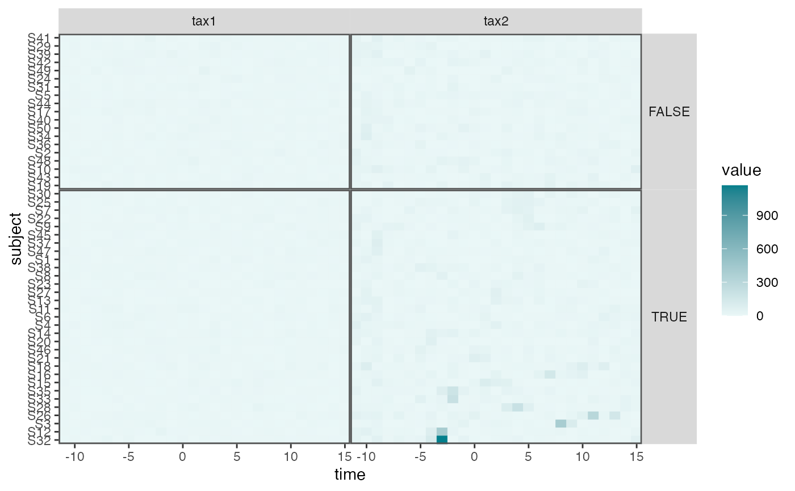

Visualize Time Series Heatmaps
interaction_hm.RdThis is a helper function to visualize time series for a subset of taxa across all subjects. It is used in the raw data figures in the case studies section of the accompanying manuscript.
Arguments
- values_df
A data.frame containing joined information from a
ts_interobject. Each row should be one count from one taxon/subject pair. The output ofpivot_tsreshape data to this format.- taxa
A character vector of taxa to filter down to in the final visualization.
- condition
A subject-level variable to use during faceting. Defaults to no faceting.
- r
When ordering subjects, we consider averages after rounding timepoints into bins. Large
rcorresponds to fine-grained binning, negativerare more coarse bins. Defaults to 0. Seesubject_orderfor details.
Examples
library(dplyr)
#>
#> Attaching package: ‘dplyr’
#> The following objects are masked from ‘package:stats’:
#>
#> filter, lag
#> The following objects are masked from ‘package:base’:
#>
#> intersect, setdiff, setequal, union
data(sim_ts)
pivoted <- sim_ts |>
pivot_ts() |>
mutate(v_pos = V1 > 0)
#> Joining with `by = join_by(sample)`
#> Joining with `by = join_by(sample)`
#> Joining with `by = join_by(subject)`
interaction_hm(pivoted, c("tax1", "tax2"), "v_pos")

pivoted |>
group_by(taxon) |>
mutate(value = rank(value) / n()) |>
interaction_hm(c("tax1", "tax2"), "v_pos")